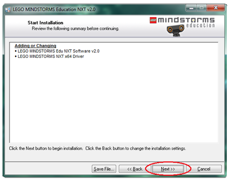

Instalace a první spuštění
V následujícím textu se budu pouze zabývat programem LEGO MINDSTORMS NXT
ve verzi 2.0 - výuková verze. Instalační balíček mi zapůjčil
vedoucí bakalářské práce, pan Ing. Martin Hlinovský, Ph.D. K dispozici je CD,
kterým lze provést instalaci na operačním systému Microsoft Windows. Na druhém CD
je NXT uživatelská příručka. Dále balíček obsahuje DVD, pomocí něhož
program lze nainstalovat na počítačích se systémem Apple Macintosh. Já jsem provedl instalaci
na svém notebooku se 64 bitovým operačním systémem Windows 7 Home Premium.
Systémové požadavky
- Microsoft Windows
- Windows XP Professional nebo Home Edition se Service Packem 2 nebo novější
- procesor Intel® Pentium® nebo kompatibilní, minimálně 800 MHz (doporučeno
1,5 GHz nebo lepší)
- Windows Vista Service Pack 1 nebo novější
- procesor Intel® Pentium® nebo kompatibilní, minimálně 1 GHz (doporučeno 1,5 GHz nebo lepší)
- CD-ROM mechanika
- operační paměť: 512 MB RAM – minimálně
- alespoň 700 MB volného místa na pevném disku
- XGA displej (1024x768)
- 1 USB port
- kompatibilní Bluetooth adaptér – podporované programy pro Bluetooth jsou Widcomm Bluetooth
pro Windows ve verzi novější než v. 1.4.2.10 SP5, Bluetooth „stacks“
zahrnuté v Microsoft Windows XP se Service Packem 2 nebo Service Packem 3, Windows Vista nebo Vista
Service Pack 1
- Apple Macintosh
- Apple MacOS X verze 10.3.9, 10.4 nebo 10.5
- Power PC® G3,G4, G5 procesor, minimálně 600 MHz (doporučeno 1.3 GHz nebo lepší)
- Apple MacOS X verze 10.4 nebo 10.5
- procesor Intel
- DVD mechanika
- aspoň 700 MB volného místa na pevném disku
- XGA displej (1024x768)
- 1 USB port
- kompatibilní Bluetooth adaptér - , Bluetooth „stacks“ zahrnuté v Apple MacOS X 10.3.9, 10.4 a 10.5
Instalace
- Zavřete všechny otevřené programy.
- Vložte instalační CD do mechaniky vašeho počítače.
- Pokud se CD automaticky nenačte, tak na ploše dvakrát klikněte na ikonu „Můj počítač“.
Najděte disk s názvem „Mindstorms® NXT“ a dvakrát na něj klikněte.
- Spustí se úvodní instalační okno (Obr. 1), ve kterém si zvolíte jazyk instalace
Obr. 1: Úvodní
instalační okno pro výběr jazyka použitého při instalaci
- Já si zvolil angličtinu. Jaký jazyk si zvolíte vy, je na vás. Kliknutím na tlačítko
s příslušným jazykem se objeví další okno (Obr. 2), ve kterém je vidět
průběh inicializace instalátoru.
Obr. 2: Okno s průběhem načítání
dalších komponent
- Jakmile doběhne „zelený indikátor“, který je umístěný v dolní části okna,
až na konec, tak se objeví okno (Obr. 3), ve kterém si můžete zvolit, jaké části
programu chcete nainstalovat a cílový adresář pro instalaci. Pokud máte 64 bitový operační systém,
tak určitě nechte druhou položku „LEGO MINDSTORMS NXT x64 Driver“ zatrhnutou,
aby se nainstalovala, jinak by vám pak program nefungoval. Dále se v levé části okna nachází informace
o tom, že se dané položky nainstalují na místní pevný disk a kolik je potřeba volného místa.
Pokud jste spokojeni s předdefinovaným cílovým adresářem „C:\Program Files (x86)\LEGO Software\“,
můžete kliknout na tlačítko Next. Pokud nejste spokojeni a chcete změnit cílový adresář,
tak klikněte na tlačítko Browse. Objeví se okno s adresářovou strukturou vašeho
počítače, kde si zvolíte, kam chcete program nainstalovat. Po navolení klikněte na
tlačítko OK.
Obr. 3: Okno s průběhem
načítání
- V následujícím okně (Obr. 4) jsou k přečtení licenční podmínky.
Pro přejití na další okno je potřeba souhlasit s licenčními podmínkami
kliknutím na přepínač s textem “I accept the License Agreement(s)“.
Pak již můžete kliknout na tlačítko Next.
Obr. 4: Okno s licenčními
podmínkami
- Objeví se okno (Obr. 5) s přehledem, které položky se nainstalují.
Pro přejití k samotné instalaci stačí kliknout opět na tlačítko Next.

Obr. 5: Okno s přehledem
položek pro instalaci
- V následujícím okně (Obr. 6) je vidět průběh instalace.
Obr. 6: Okno s průběhem
instalace
- Po „doběhnutí“ indikátoru průběhu instalace se objeví poslední okno (Obr. 7),
kde můžete kliknutím na tlačitko View Readme otevřít poznámkový blok s informacemi
o právě nainstalovaném programu. Vedlejší velké tlačítko slouží k registraci
programu. Pro dokončení instalace klikněte na tlačítko Finish umístěné v levém
dolním rohu okna.
Obr. 7: Okno po dokončení
instalace
- Po kliknutí na tlačítko Finish se objeví ještě jedno okno,
které vidíte na Obr. 8. Před prvním spuštěním programu musíte restartovat
počítač, a proto klikněte na tlačítko Restart. Pokud chcete restartovat
počítač později, tak klikněte na tlačítko Restart Later.
Pro instalaci hardwaru musíte nejprve vypnout počítač. To se vykoná po kliknutí
na prostřední tlačítko Shut Down.
Obr. 8: Okno pro
dokončení instalace
Spuštění
Po úspěšně dokončené instalaci
a restartování počítače se na pracovní ploše vašeho monitoru
budou nacházet dvě nové ikony. Ikona s názvem
„NXT 2.0 Programming“ slouží
ke spuštění programu LEGO MINDSTORMS NXT, ve kterém budete vytvářet programy
pro vašeho LEGO robota a druhá ikona s názvem
„NXT 2.0 Data Logging“
je určena ke spuštění programu, který slouží pro záznam dat.
Dvojím klinutím na první zmíněnou ikonu dojde
ke spuštění programu. V prostřední části obrazovky se nachází úvodní okno s dvěma animovanými
průvodci
Getting Started a
System Overview (Obr. 9). Průvodce
Getting Started poskytuje
rychlý návod na vytvoření programu a další práci s ním. Druhý průvodce
System Overview
stručně popisuje jednotlivé části NXT programovacího prostředí. Pod těmito průvodci
jsou dvě sekce. První z nich slouží pro vytvoření nového programu a druhá pro otevření
nedávno vytvořených programů.
Obr. 9: Průvodce Getting Started a
System Overview
Popis jednotlivých částí programu naleznete ZDE